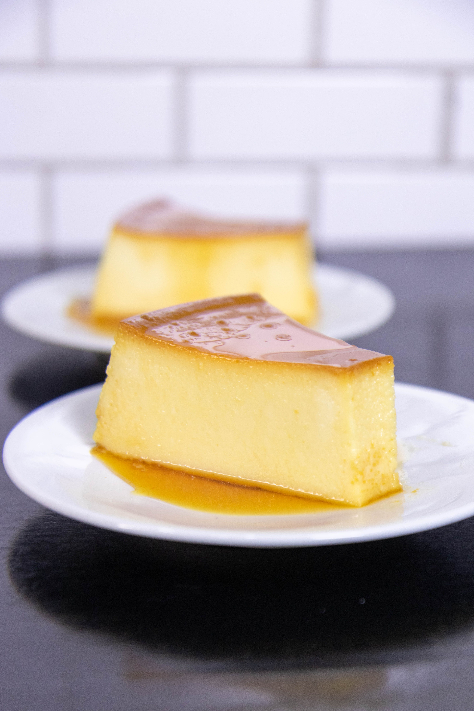

Receita de pudim
| Informações | ||
|---|---|---|
| dificuldade | porções | tempo |
| medio | 8 porções | 60 minutos |

Como fezer?
Ingredientes do pudim:
- 1 lata de leite condensado
- 1 lata de leite (medida da lata de leite condensado)
- 3 ovos inteiros
ingredientes da calda.
- 1 xícara (chá) de açúcar
- 1/2 xícara de água
Modo de preeparo do pudim.
- Primeiro, bata bem os ovos no liquidificador.
- Acrescente o leite condensado e o leite, e bata novamente.
Modo de preeparo da calda e como assar.
- Derreta o açúcar na panela até ficar moreno, acrescente a água e deixe engrossar.
- Coloque em uma forma redonda e despeje a massa do pudim por cima.
- Asse em forno médio por 45 minutos, com a assadeira redonda dentro de uma maior com água.
- Espete um garfo para ver se está bem assado.
- Deixe esfriar e desenforme.
obrigado pela preferência!